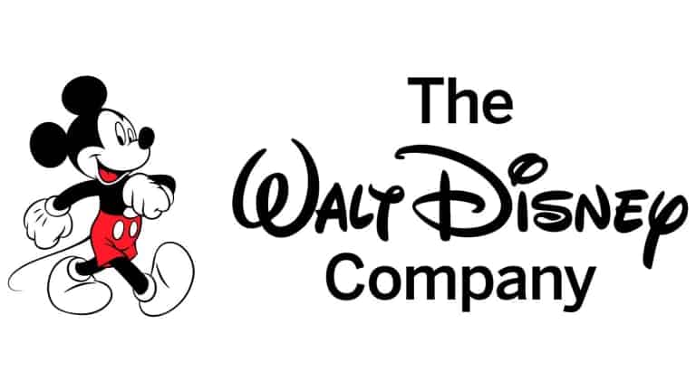
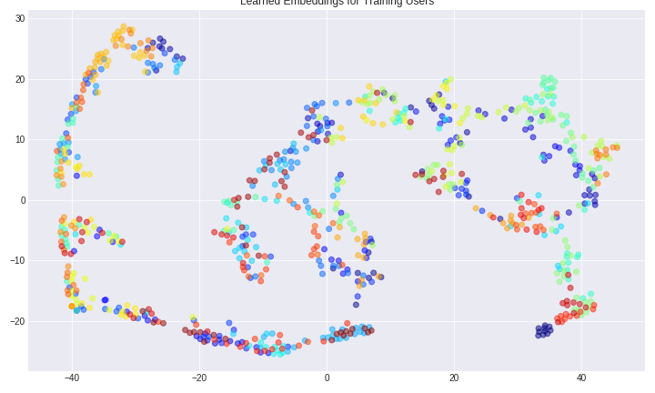
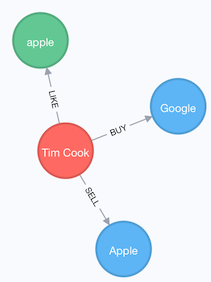
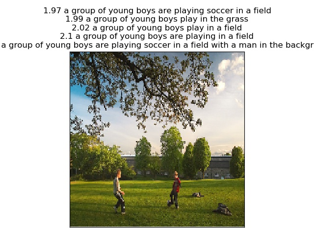
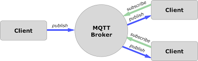

|
Arnav Arnav
Arnav is currently a Decision Science Professional Intern at Walt Disney World.
He got his Masters degree in Data Science at
Indiana University Bloomington in May 2019. He is fascinated by machine
learning and data science and has worked on some interesting
machine learning, deep learning, NLP and data analysis
projects during his MS. He has experience with web
development and microservces architecture. Having taken
courses such as Elements of AI, Data Mining, Machine
Learning, Cloud Computing and Machine Learning for Signal
Processing, he is keen to explore new research domains. He
is interested to work on applications of grahical models, reinforcement learning, deep learning models.
Email |
CV |
LinkedIn |
Github
|

|
Skills
- Machine Learning: Classification, Regression, Clustering, Recommendation System, Bayesian Inference, Natural Language Understanding, Computer Vision
- Machine Learning Models: Linear/Logistic Regression, Generalied Linear Models, Decision Trees, Random Forest, SVM, Naive Bayes, Ensemble Methods, K-Means, DBSCAN, Agglomerative & Divisive Clustering, KNN, Bag-of-Words, Collaborative Filtering, Deep Neural Networks (CNN, RNN, LSTM, VAE), Boltzmann Machines
- Programming Languages: Python, C++, Java, R, Cython, MATLAB, SAS
- Libraries and Software: NumPy, Pandas, Scikit-Learn, SciPy, Pytorch, TensorFlow, Keras, NLTK, Spacy, Stanford CoreNLP PySpark, networkx
- Data Visualization: Seaborn, Matplotlib, ggplot, Altair, plotly, Tableau
- Web Development: HTML, CSS, Javascript, Coffeescript, Bootstrap CSS, Django, Ruby on Rails, Ember.js
- Software Dev Tools:Swagger Codegen, Docker CE, Kubernetes, Travis-CI, Virtualbox, Devstack, MQTT
- Version Control: Git
- Databases: PostgreSQL, MySQL, MongoDB, Neo4j
- Preferred Operating Systems:Linux (Ubuntu, Fedora, Centos, Mint), Windows
- Preferred Editors:GNU Emacs, Jupyter Notebook, Pycharm
|
|

|
Decision Science Professional Intern
The Walt Disney Company, Orlando, August'19 - Present
- Explored and implemented various methods to
dynamically adjust product level demand forecasts to match actual
behavior based on new and observed data points in python and SAS.
- Improved 70% of Disney Cruise Line booking forecasts
with a mean improvement of 35% in absolute error using post-processing
steps.
|

|
Associate Instructor
Indiana University, Bloomington, August'18 - December'18
- Worked as a Associate Instructor for the Advanced Data Science On-Ramp course. The course
contains different modules on Hadoop, Machine learning with Spark, Basics of Scala and Deep Learning
- Developed a portion of the course for Machine learning with Spark covering pyspark.ml module for spark Dataframes.
- Updated the basics of scala course to include instructions to execute programs from the sbt
- Graded assignments and asnwer student questions regarding the course material
|
|
|
Web Application Developer
IDAH, Indiana University Bloomington, June'18 - July'18
HTML, CSS, Javascript, Twine
Built an Interactive Twine based immersive game
Used content provided by the Supervisors to develop a story arc in the game
Used js libraries for displaying 3D photoshpheres for desktop as well as wearable devices Like google cardboard
|
|
|
Python IoT Developer
CNS, Indiana University Bloomington, October'17 - Dec'17
Python, OpenCV, Computer Vision, Raspberry Pi, GrovePi
Contributed to the development of cloudmesh.pi, a library for prototyping IoT applications on Raspberry pi
Interfaced different analog and digital sensors and built modules for each
Built a system of dendrites controlled to move in various patterns by different Raspberry pis communicating via MQTT
|
|
|
Software Engineer Intern
Navyug Infosolutions, Jan'17 - July'17
Ruby on Rails, Javascript, JQuery, Coffee Script, Apache Cordova, HTML, CSS
Developed and deployed an internal project management web application used by 100 people using Ruby on Rails
Developed Android and iOS application for the web application using Apache Cordova
Integeated the application with google APIs to provide Team administrators and users access to auto generated time sheets
Used JQuery UI for interactive and responsive interface
|
|
|
Software Engineer Intern
NETRA NTPC, May'15 - July'15
Python, Ganglia, HPC system, Anomaly Detection
Studied and monitored a High Performance Computing setup at NTPC NETRA using Ganglia
Developed an anomaly detection tool used to detect anomalies in the NTPC Power Plant equipments based on previous data, tp enable preemptive maintainence
|
|  |
Speaker Identification and Verification from Audio
Python, Pytorch, Librosa, Audio Processing, Deep Learning
- Uniquely identify a small subset of speakers from a dataset of a huge number of speakers in a text independent manner
- Trained a convolutional Siamese network with contrastive loss on the STFT representations of audio from a subset of the VoxCeleb dataset on AWS.
- Evaluated the network based on precision and recall on the dataset and achieved 0.78 precision and 0.84 recall on the dataset
- Used T-SNE based dmensionality reduction on the learned embeddings as a sanity check for class separation after training the model.
- Developed a terminal application for speaker identification and verification.
|
|  |
Open Domain Information Extraction
Python, NLTK, Stanford CoreNLP, Spacy, XMLRPC, Knowledge Graphs, Ontologies
- Extracting subject-predicate-object relations from
text data and stord them in a Neo4j knowledge graph
- Used Stanford CoreNLP and Spacy for generating parse
trees and extracting relations
- Use existing large knowledge graphs like MS Concept
Graph and DBpedia to get a set of possible closest
hypernym(type) of each of the entities
- Used Word2vec word embeddings and cosine similarity
based SSE function to disambiguate the type
(hypernym)
- Enable semantic search on this Knowledge Graph via
Neo4j
|
|  |
Flask App for Image Captioning using Deep Lrarning
Python, Flask, Keras, VGG16, VGG19, ResNet50, LSTM, Flickr8K
- Extract Image features from different CNN object
detection models
- Train a multi-input sequence to sequence LSTM model
to learn Image to Caption mappings
- Train the model with image features extracted from
differnt CNN models and compare performance
- Performed hyperparameter tuning to learn model
parameters (learning rate, LSTM size, embedding_size,
dropout)
- Evaluate performance of the model using BLEU1 -
BLEU4 scores on Flickr8K dataset
- Built a Flask application using to caption images
using the trained model
|
 |
Swagger Service for Openstack
Python, Swagger API, openstack, docker,
Wrote swagger yml specification for openstack
instances
Used Swagger codegen and python to create REST endpoints
for openstack services (start, stop, delete, create, and
list VMs) and potentially provide an additional layer for
user privillege and access management
Deploy the application with docker, and test on
chameleon cloud
|
|  |
IoT monitoring application using MQTT and Raspberry pi
Python, MQTT, IoT, Raspberry Pi
- Built a robot car using Raspberry Pi
- Use lightweight MQTT protocol to remotely control the robot car over wifi to potentially
aid monitoring and surveying applications
- Use MQTT to stream image frames in real time from
Raspberry Pi onboard camera to the controlling machine, to
aid navigation
|
|